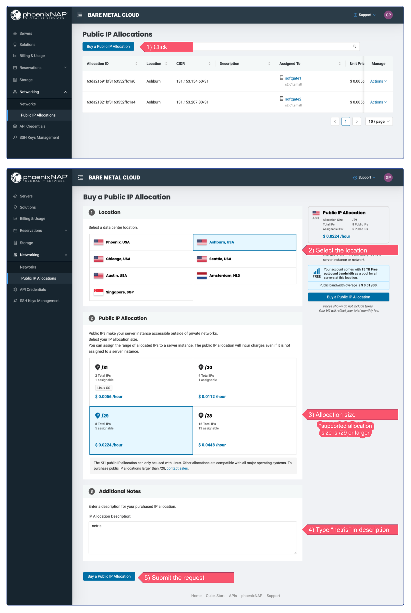
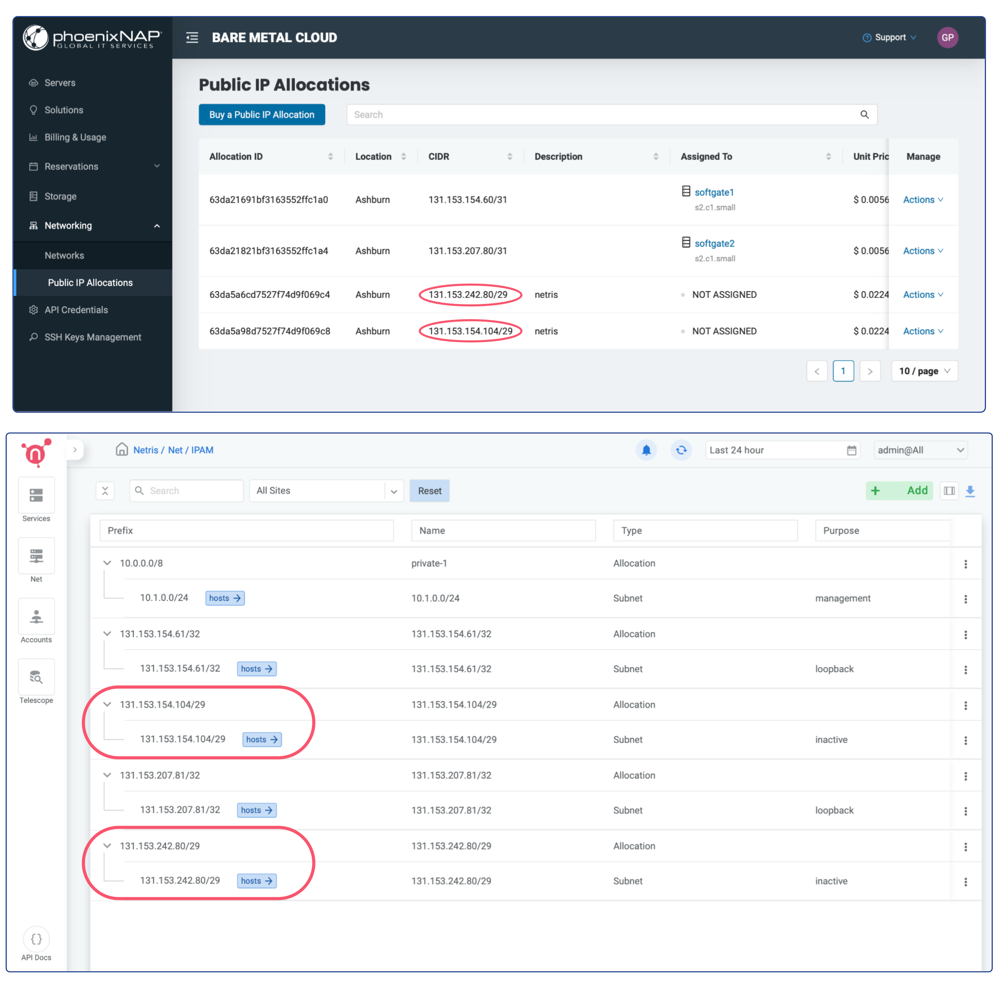
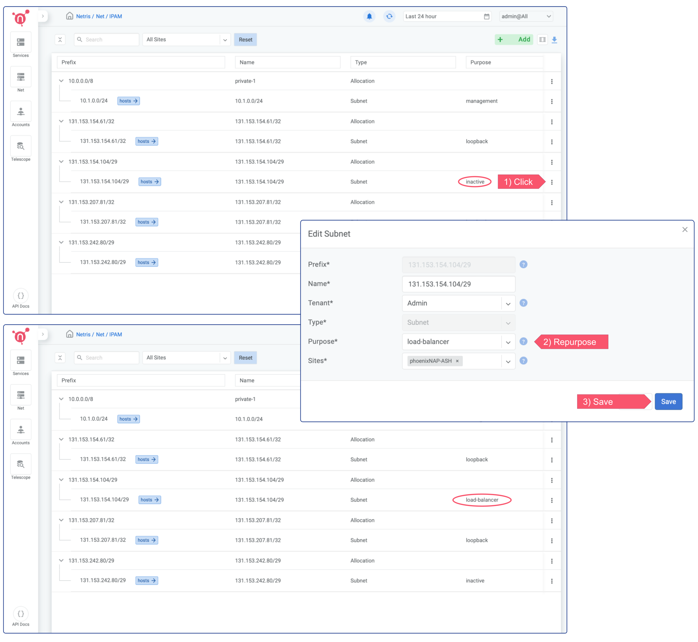
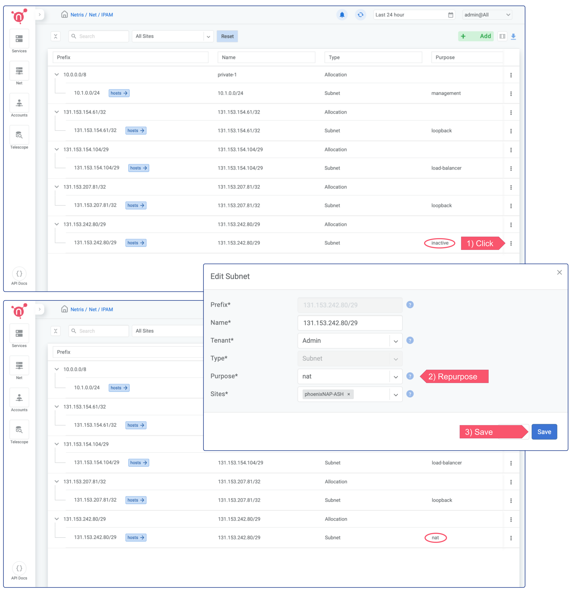
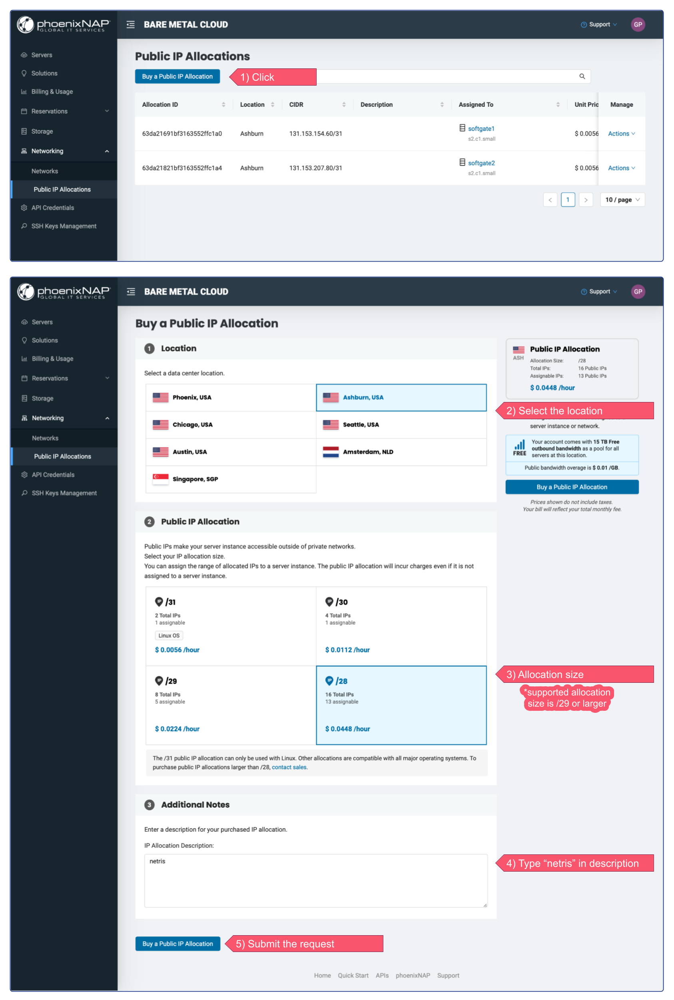
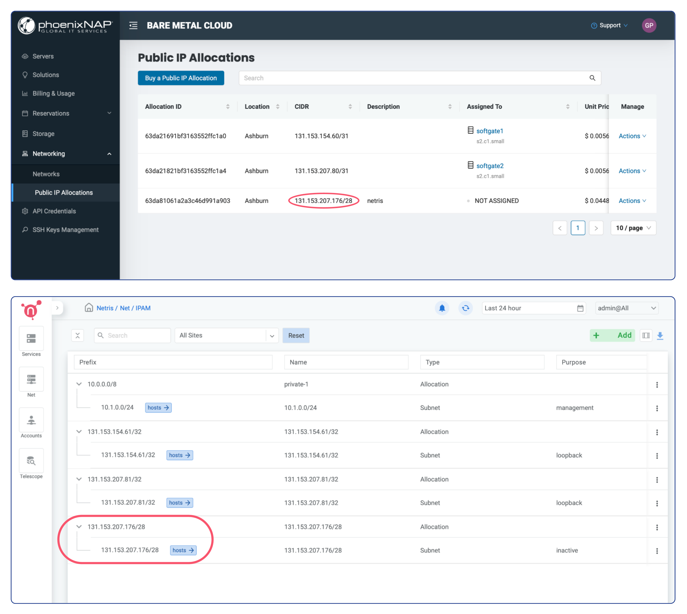
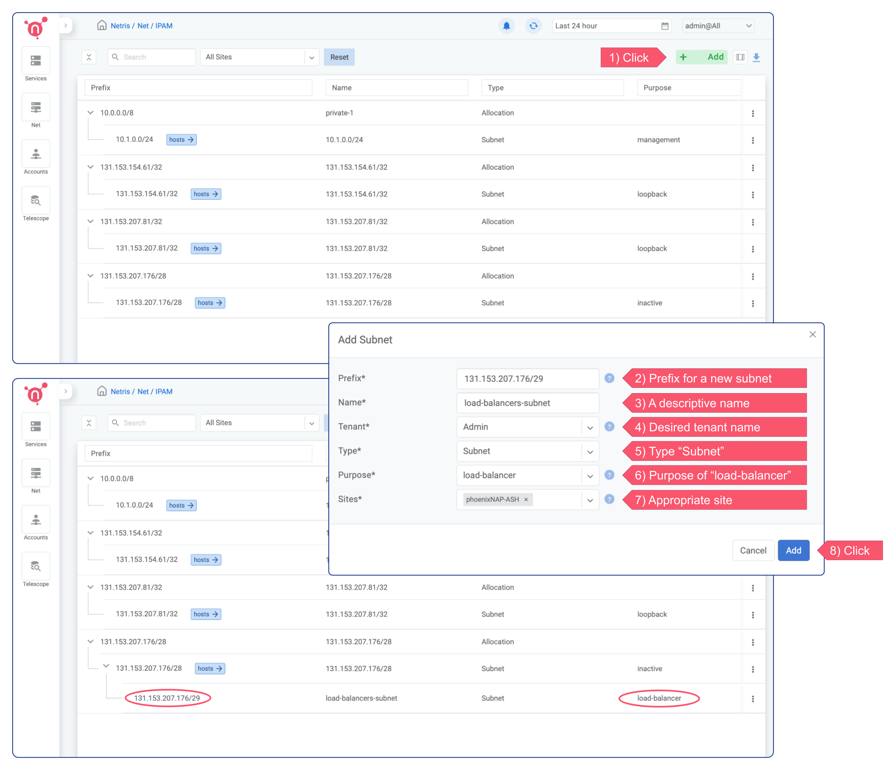
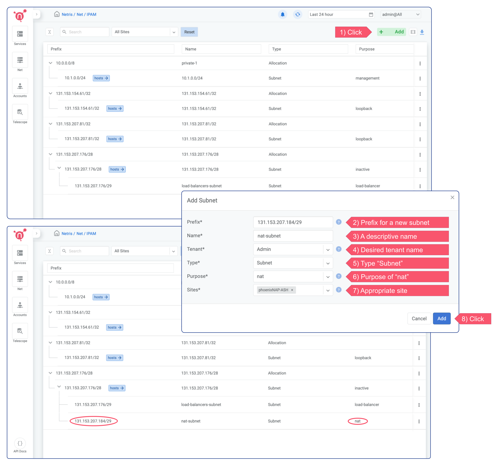
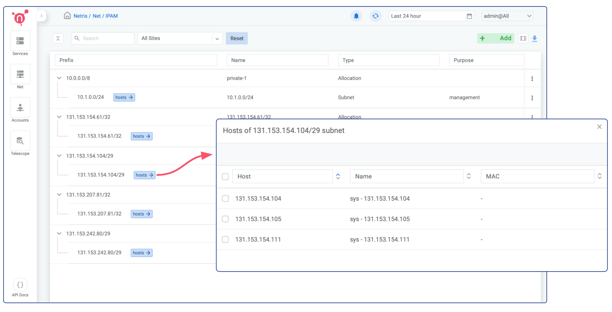

Join Slack
Join Slack
IPAM Setup for Services
Although bare metal servers in phoenixNAP BMC may get a public IP address and can access the Internet, it’s not the case with the VMs. When you use server virtualization, something needs to be the gateway for your virtual networks. That gateway will provide packet forwarding with access control between your virtual private networks, will provide NAT, and on-demand (Elastic) Load Balancer services. Physically that gateway is Netris SoftGate. And it operates automatically, providing you with the VPC-like networking capabilities.
Both NAT and on-demand Load Balancer services need public IP addresses.
Go to phoenixNAP BMC web console and click on Networking → Public IP Allocations (see the screenshot below)
Option 1 - Separated allocation for each purpose
In this example, I’m requesting two /29 (5 assignable IPs) IP Allocations, one for NAT and one for Load Balancer.
It’s important to type the “netris” word in the description. This is a signal for Netris Controller that this allocation is intended for Netris VPC.
You can always request more IP address allocations in the future.
Once IP address allocations are provisioned on phoenixNAP BMC you should be able to find them automatically replicated in Netris web console under Net → IPAM
You don’t need to worry about assigning them to a Public Network on the phoenixNAP side, Netris will handle that automatically when that makes sense (associated with any service).
1. Enable on-demand (elastic) Load Balancer
To Enable an on-demand (elastic) Load Balancer, you only need to change the “purpose” field of appropriate IP subnet from “inactive” into “load-balancer”
Click on the 3 dots menu (in this example of first /29 subnet), click edit, and select “load-balancer” from the dropdown menu next to the “purpose” field.
Now on-demand (elastic) load balancer service is enabled and can be consumed either from web console, or from Kubernetes using service of the type load-balancer, or with Terraform.
Please note that in this example we left the field Tenant set to Admin. Tenancy is used for role based access control and resource delegation. In other words you may want to create a user role and tenant for your colleagues that are supposed to consume Netris VPC services, but not administer it.
2. Enable NAT
To enable NAT, you need to repurpose a subnet for NAT. In the below example, I’m repurposing the second of the newly requested /29 subnets for NAT.
Then You need to create a NAT rule in the Net → NAT section of Netris web console. Netris supports most of the standard rules for SNAT and DNAT.
Option 2 - Splitting single allocation into different subnets
In this example, I’m requesting a single /28 (13 assignable IPs) Public IP Allocation, then splitting it into two /29 subnets, one for NAT and one for Load Balancer.
It’s important to type the “netris” word in the description. This is a signal for Netris Controller that this allocation is intended for Netris VPC.
You can always request more IP address allocations in the future.
Once IP address allocations are provisioned on phoenixNAP BMC you should be able to find them automatically replicated in Netris web console under Net → IPAM
You don’t need to worry about assigning them to a Public Network on the phoenixNAP side, Netris will handle that automatically when that makes sense (associated with any service).
1. Enable on-demand (elastic) Load Balancer
In this scenario, to Enable an on-demand (elastic) Load Balancer, you need to create a smaller subnet with the purpose of “load-balancer”.
Click the + Add button in the top right corner, type a “Prefix” for a new subnet, type a descriptive “Name” for it, select the desired tenant name from the dropdown menu next to the “Tenant” field, select “Subnet” from the “Type” dropdown menu, select “load-balancer” from the “Purpose” dropdown menu, and select the appropriate site from the “Sites” dropdown menu.
Now on-demand (elastic) load balancer service is enabled and can be consumed either from web console, or from Kubernetes using service of the type load-balancer, or with Terraform.
Please note that in this example we left the field Tenant set to Admin. Tenancy is used for role based access control and resource delegation. In other words you may want to create a user role and tenant for your colleagues that are supposed to consume Netris VPC services, but not administer it.
2. Enable NAT
To enable NAT, you need to create a smaller subnet with the purpose of “nat”.
Click the + Add button in the top right corner, type a “Prefix” for a new subnet, type a descriptive “Name” for it, select the desired tenant name from the dropdown menu next to the “Tenant” field, select “Subnet” from the “Type” dropdown menu, select “nat” from the “Purpose” dropdown menu, and select the appropriate site from the “Sites” dropdown menu.
Then You need to create a NAT rule in the Net → NAT section of Netris web console. Netris supports most of the standard rules for SNAT and DNAT.
Note*
It doesn’t matter with what Option (1,2) you will go. Once the Public IP Allocation has been replicated in the Netris IPAM, Netris will automatically reserve the network, first usable, and broadcast IP addresses because they are unusable in this (phoenixNAP BMC) scenario.
